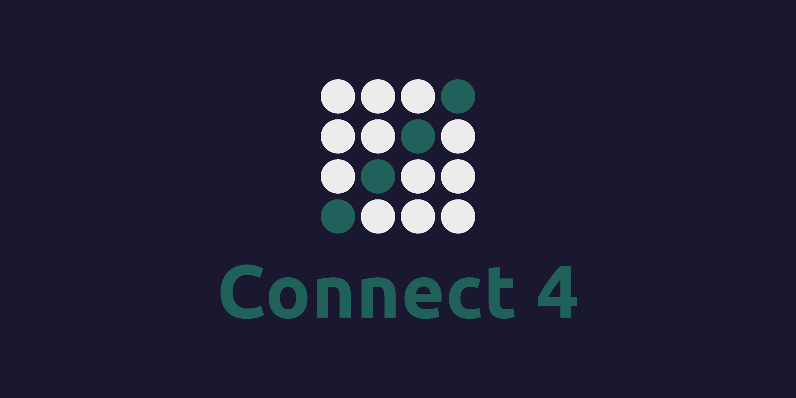

I am a student at the University of Georgia studying Computer Science and Biology on a Pre-Dental path with a strong interest in Cyber Security and Software Engineering.
Education
UGA, 2026, Computer Science, GPA: 3.89
Relevant Courses: Computer Science Principles 1 & 2, Theory of Computing, Data Structures, Web Programming, Discrete Mathematics
UGA Asha For Education - Graphic Designer, Secretary
Fall 2023 - Present
Projects
iTunes Gallery
Developed an interactive JavaFX-based iTunes Gallery application that dynamically fetches and displays images using the iTunes Search API.
Leveraged HTTP requests, JSON parsing, and modular Java to handle API responses and update the user interface in real-time.
Designed and implemented efficient UI components, including a grid-based image gallery, with robust error handling and seamless user experience.
Gained hands-on experience in software development best practices, including multi-threading, object-oriented design, and API integration.
Event Discovery App
Built a JavaFX app to search music events with Ticketmaster API and recommend similar artists via TasteDive API.
Implemented dynamic API integration to fetch event details based on user location input, enabling seamless interaction and real-time data updates in the UI.
Utilized HTTP requests, JSON parsing (Gson), and URL encoding to process and display event/artist data.
Applied object-oriented design to separate API handling from UI logic, ensuring scalability and clean architecture.
Implemented asynchronous API calls with HttpClient, preventing UI lag during data retrieval.

Connect Four
Developed a playable connect four game program.
Implemented methods that determined whether a move created a winner.
Created parameters that prohibited improper inputs within the game.
Utilized terminal within macOS to access Unix and use EMACs to create this Java-based program.